Quadrilaterals — Practice Set
Bank code: GEO-QDL · Section: Geometry · 30 questions — Easy 7 · Medium 16 · Hard 7
Interior angles total 360; for a fixed perimeter the square holds the most area, and a rectangle's diagonal is just the Pythagorean theorem again.
Every question below is live in the question bank under the ID shown — the sheet and the portal are the same questions. Attempt a level with the clock running, then check Part C.
Part A — Questions
Quantitative Comparison — the four choices are always the same, so they are not reprinted: (A) Quantity A is greater · (B) Quantity B is greater · (C) The two quantities are equal · (D) The relationship cannot be determined from the information given
Level 1 · Easy — 7 questions · ~5 min
warm-up — these must be automatic
Q1 · GEO-QDL-002 · MCQ · 40s
A rectangle has length 9 and width 4. What is its perimeter?
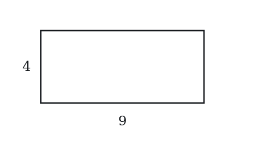
(A) 13
(B) 26
(C) 36
(D) 52
(E) 72
Q2 · GEO-QDL-005 · MCQ · 35s
What is the sum of the interior angles of any quadrilateral?
(A) 90°
(B) 180°
(C) 270°
(D) 360°
(E) 540°
Q3 · GEO-QDL-008 · QC · 45s
Square P has side length 4. Rectangle Q has length 6 and width 2.
Quantity A: Area of Square P Quantity B: Area of Rectangle Q
Q4 · GEO-QDL-010 · Numeric Entry · 40s
A rectangle has area 48 and width 6. What is its length?
Numeric entry — write the number.
Q5 · GEO-QDL-013 · MCQ · 55s
A quadrilateral has three angles measuring 85°, 95°, and 110°. What is the measure of the fourth angle?
(A) 60°
(B) 70°
(C) 80°
(D) 90°
(E) 100°
Q6 · GEO-QDL-014 · MCQ · 50s
A square has side length 5. What is the length of its diagonal?
(A) 5
(B) 5√2
(C) 5√3
(D) 10
(E) 25
Q7 · GEO-QDL-015 · Numeric Entry · 55s
A rectangle has length 8 and width 6. What is the length of its diagonal?
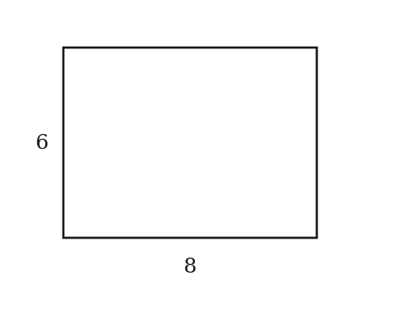
Numeric entry — write the number.
Level 2 · Medium — 16 questions · ~22 min
two or three steps, one planted trap each
Q8 · GEO-QDL-016 · MCQ · 70s
A rectangle has a perimeter of 50 and a length of 15. What is its area?
(A) 75
(B) 100
(C) 150
(D) 200
(E) 225
Q9 · GEO-QDL-017 · QC · 75s
Square A has a diagonal of length 8.
Quantity A: The side length of Square A Quantity B: 4√2
Q10 · GEO-QDL-018 · MCQ · 85s
A square is inscribed in a circle of radius 6. What is the area of the square?
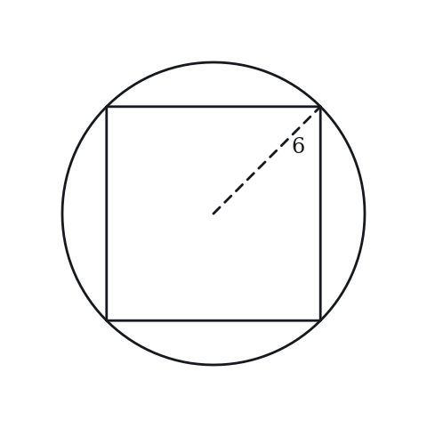
(A) 36
(B) 48
(C) 72
(D) 108
(E) 144
Q11 · GEO-QDL-021 · MCQ · 65s
A square has area 100. A second square has a side length twice that of the first. What is the area of the second square?
(A) 200
(B) 250
(C) 300
(D) 400
(E) 500
Q12 · GEO-QDL-022 · Select all that apply · 90s
A rectangle has integer dimensions and an area of 36. Which of the following could be its perimeter? Select all that apply.
(A) 24
(B) 28
(C) 30
(D) 32
(E) 74
Q13 · GEO-QDL-023 · QC · 75s
A rectangle has a diagonal of length 13 and one side of length 5.
Quantity A: The area of the rectangle Quantity B: 60
Q14 · GEO-QDL-030 · Numeric Entry · 75s
Three identical squares, each with area 25, are arranged in a row to form a rectangle. What is the perimeter of the resulting rectangle?
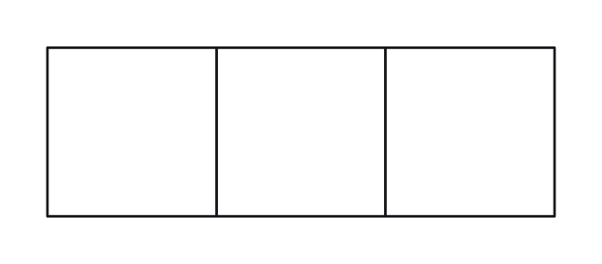
Numeric entry — write the number.
Q15 · GEO-QDL-035 · MCQ · 90s
A rectangle has length twice its width. Its diagonal is 10. What is the area of the rectangle?
(A) 20
(B) 40
(C) 80
(D) 100
(E) 200
Q16 · GEO-QDL-036 · Select all that apply · 85s
Which of the following are properties shared by all squares AND all non-square rectangles? Select all that apply.
(A) All four angles are 90°
(B) All four sides are equal in length
(C) The diagonals are equal in length
(D) The diagonals are perpendicular to each other
(E) Opposite sides are parallel and equal
Q17 · GEO-QDL-038 · QC · 80s
A square has perimeter 24. A rectangle has the same perimeter (24) and length 8.
Quantity A: Area of the square Quantity B: Area of the rectangle
Q18 · GEO-QDL-040 · Numeric Entry · 85s
A square has area numerically equal to its perimeter. What is the side length of the square?
Numeric entry — write the number.
Q19 · GEO-QDL-044 · Numeric Entry · 100s
A square has side length equal to the diagonal of a smaller square. If the smaller square has area 18, what is the area of the larger square?
Numeric entry — write the number.
Q20 · GEO-QDL-045 · MCQ · 85s
A large square has side 12. Inside it, four identical smaller squares are placed in the four corners, each with side 3. What is the area of the region inside the large square but outside all four small squares?
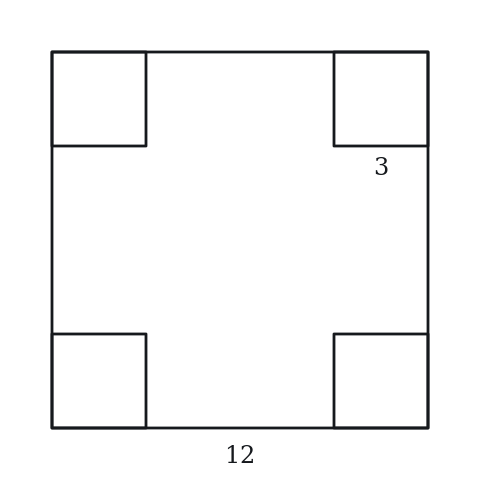
(A) 36
(B) 72
(C) 108
(D) 135
(E) 144
Q21 · GEO-QDL-059 · QC · 120s
A rectangle has area 120 and perimeter 46.
Quantity A: The length of the longer side Quantity B: 3 times the length of the shorter side
Q22 · GEO-QDL-KMF2-002 · Select all that apply · 85s
In the figure above, WXYZ is a square and WY is one of its diagonals. Which of the following must be true?
Indicate all such statements.
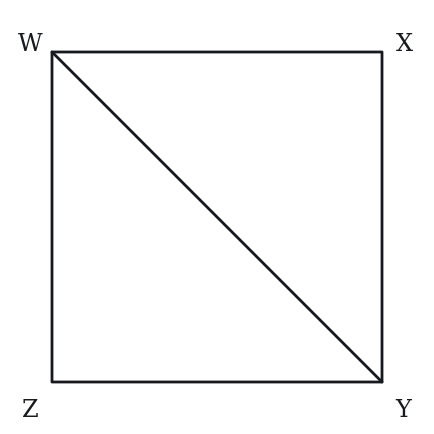
(A) WY = 2(XY)
(B) WY/XY = sqrt(2)
(C) (XY + YZ)/WY = 2
(D) (XY + YZ)/WY = sqrt(2)
(E) WY^2 = 2(XY)^2
Q23 · GEO-QDL-KMF2-003 · MCQ · 85s
The figure above shows parallelogram ABCD and a point E on side AD, where AE = 2(ED). If the area of ABCD is 60, what is the area of triangle ABE?
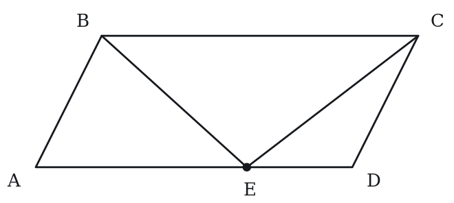
(A) 10
(B) 12
(C) 15
(D) 20
(E) 30
Level 3 · Hard — 7 questions · ~13 min
where 162+ is won or lost
Q24 · GEO-QDL-041 · QC · 105s
Square S has area 144. A circle C has circumference equal to the perimeter of square S.
Quantity A: Area of Circle C Quantity B: 144
Q25 · GEO-QDL-043 · MCQ · 100s
A rectangle has perimeter 70 and diagonal 25. What is the area of the rectangle?
(A) 150
(B) 200
(C) 250
(D) 300
(E) 350
Q26 · GEO-QDL-052 · Select all that apply · 105s
A rectangle has integer side lengths and a diagonal of length √85. Which of the following could be the perimeter of this rectangle? Select all that apply.
(A) 18
(B) 22
(C) 26
(D) 30
(E) 40
Q27 · GEO-QDL-054 · MCQ · 120s
A square is inscribed in a right triangle with legs 6 and 8, with one vertex of the square at the right angle and one side of the square lying along the leg of length 6. What is the side length of the square?
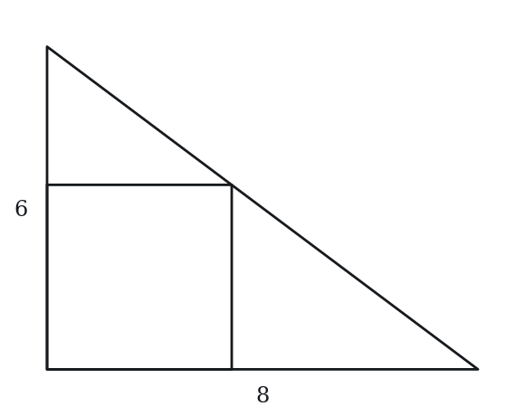
(A) 2
(B) 3
(C) 24/7
(D) 4
(E) 48/11
Q28 · SEC-PG-030 · QC · 120s
In the figure above, EFGH is a convex quadrilateral and EG and FH are its diagonals.
Note: Figure not drawn to scale.
Quantity A: The perimeter of EFGH Quantity B: EG + FH
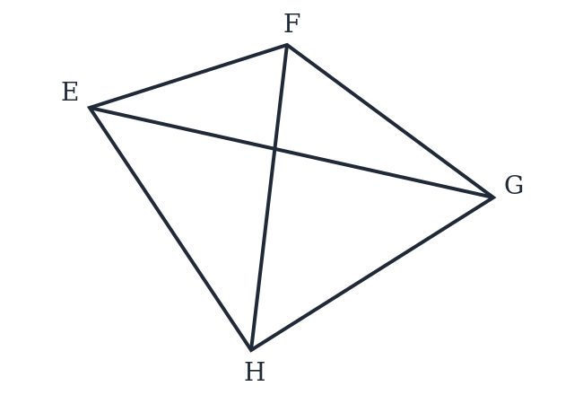
Q29 · SEC-PG-034 · Numeric Entry · 110s
The figure above shows a square tile 20 centimeters on a side. In the center of the tile is a square region 15 centimeters on a side, divided into nine congruent smaller squares. Five of those nine smaller squares are gray, as shown, and the rest of the tile is white. What fraction of the area of the tile is gray? Give your answer as a fraction.
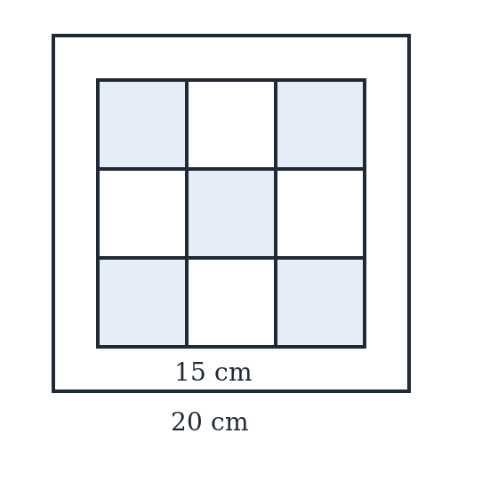
Numeric entry — write the number.
Q30 · SEC-PG-046 · Numeric Entry · 130s
In the figure above, ACEG is a square. Square ABIH shares vertex A with it, with B on side AC and H on side AG. Square JDEF shares vertex E with it, with D on side CE and F on side EG. Squares ABIH and JDEF have equal areas, and the area of square ACEG is 25 times the area of square ABIH. BJFI is a parallelogram. If the area of square ABIH is 20, what is the area of parallelogram BJFI?
Note: Figure not drawn to scale.
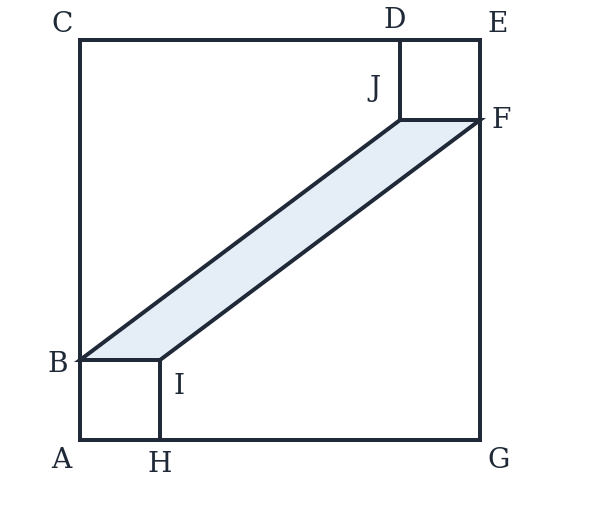
Numeric entry — write the number.
The rest of this sheet is part of Pro
All 30 questions, the answer key and full worked solutions with every trap named — plus 75 concept notes and 9,629 questions.